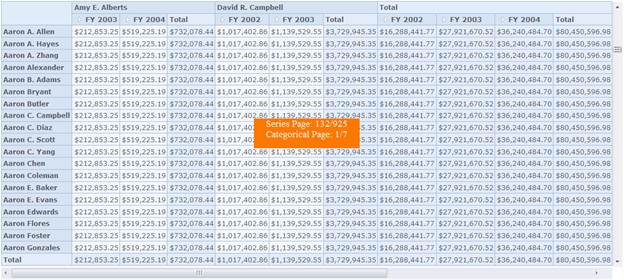

Virtual Scrolling is a technique that allows the user to scroll vertically and horizontally to view the records in pages dynamically and efficiently.
Use Case Scenarios
This feature can be used in the following cases:
· Loading large set of records at a minimal span of time.
· Viewing a set of record dynamically with ease on scrolling.
Properties
Table 22: Properties Table
|
Property |
Description |
Type |
Data Type |
Reference links |
|
EnableVirtualScrolling |
Allows the user to enable or disable the virtual scrolling option. |
Server Side |
Boolean |
NA |
|
EnablePaging |
Specifies a value indicating whether the paging is enabled in the report. |
Server side |
Boolean |
NA
|
|
PagerOption.CategorialPageSize |
Specifies the number of categorical columns to be displayed within a page of the OLAP control. |
Server side |
Integer |
NA |
|
PagerOption.SeriesPageSize |
Specifies the number of series rows to be displayed within a page of the OLAP control. |
Server side |
Integer |
NA |
Sample Link
A sample is available at the following location:
..\Syncfusion\EssentialStudio\<Version Number>\BI\Web\OlapGrid.Web\Samples\3.5\Scrolling\Virtual Scrolling Demo
Adding “Virtual Scrolling” to an Application
The virtual scrolling can be added to an application by using the below code snippet:
|
[ASPX] <syncfusion:OlapGrid ID="OlapGrid1" runat="server" EnableVirtualScrolling="true" Autoformat="Office2010Blue" /> |
|
[C#] this.OlapGrid1.EnableVirtualScrolling = true; OlapReport olapReport = new OlapReport(); olapReport.CurrentCubeName = "Adventure Works"; olapReport.EnablePaging = true; olapReport.PagerOptions.SeriesPageSize = 14; olapReport.PagerOptions.CategorialPageSize = 10; |
|
[VB] Me.OlapGrid1.EnableVirtualScrolling = True Dim olapReport As OlapReport = New OlapReport() olapReport.CurrentCubeName = "Adventure Works" olapReport.EnablePaging = True olapReport.PagerOptions.SeriesPageSize = 14 olapReport.PagerOptions.CategorialPageSize = 10 |

Figure 38:Virtual Scrolling